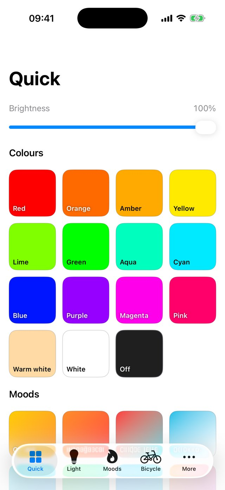
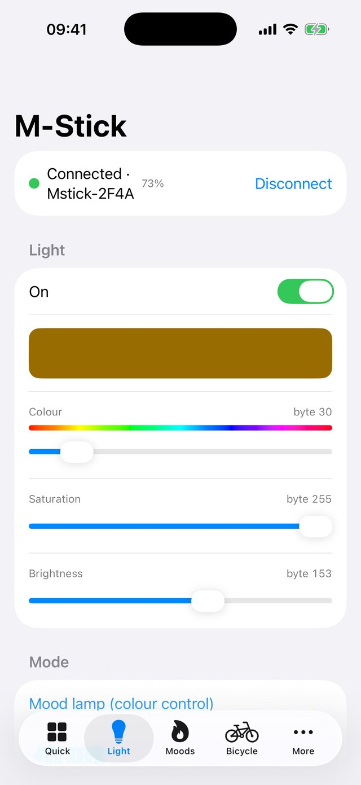
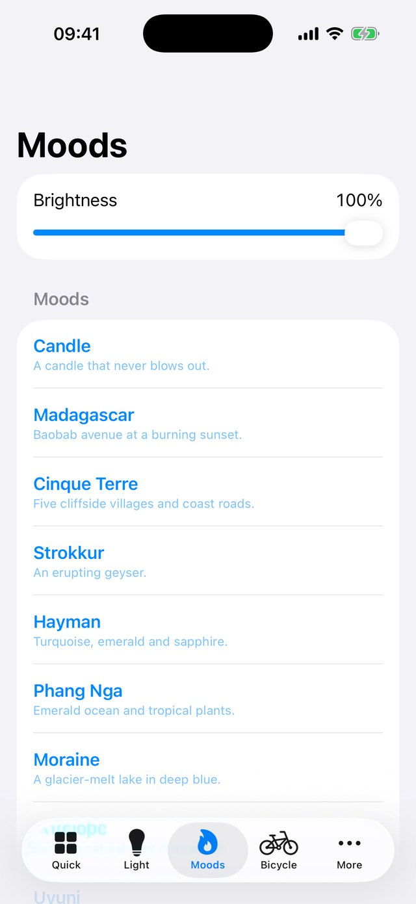
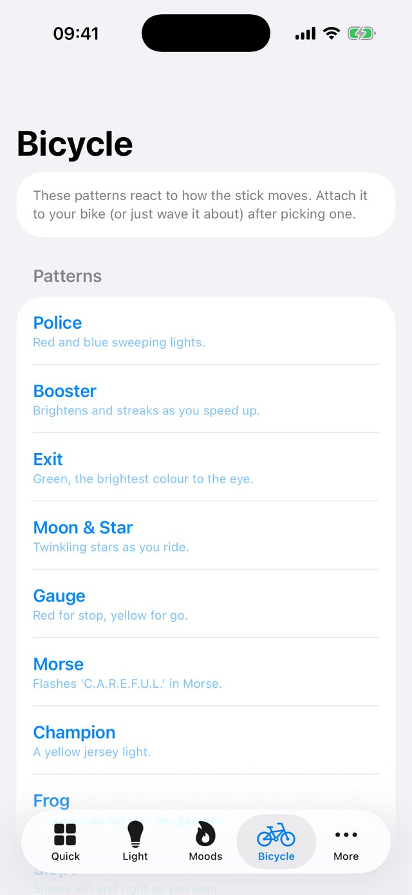
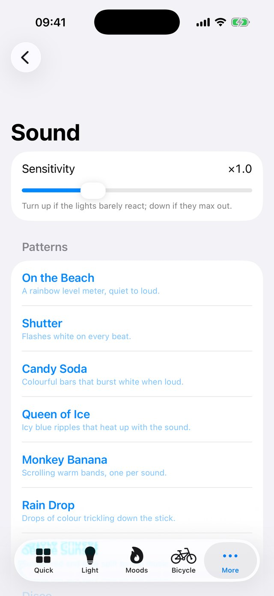
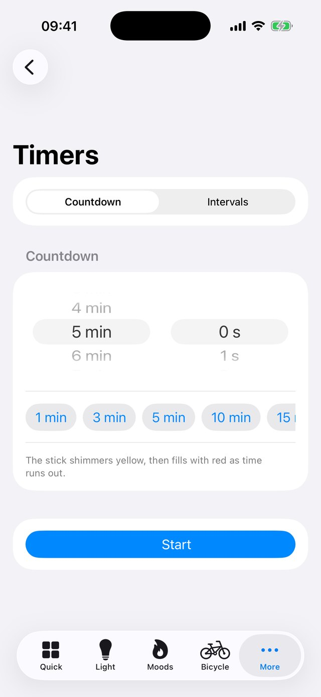
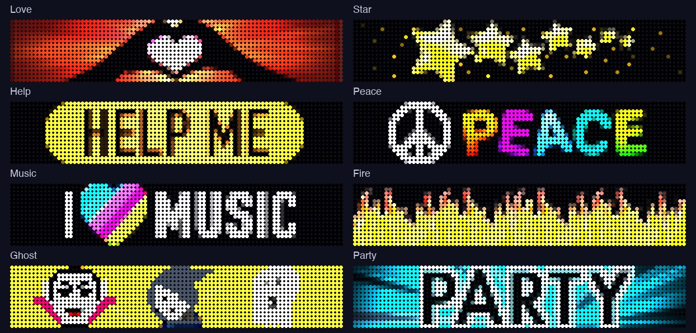

An iPhone app for the M-Stick, the 16-LED Bluetooth light from the crowdfunding campaign, whose original iPhone app has been discontinued.

The quick screen: one tap for a colour, or for a mood animation.
Not on the App Store. This is a personal project that I wrote for my own M-Stick, and I don't plan to sell it. If you own an M-Stick and would like to try a TestFlight version, contact the developer. Request a test build
In the app

Light: colour, saturation and brightness

Moods and selfie lights

Bicycle patterns

Sound patterns

Timers
What it does
Quick screen: colour tiles (red through pink, plus warm white, white and off) and mood tiles, each painted in the colour it selects, with one brightness slider.
Light: any colour, saturation and brightness, across all 16 LEDs, with the stick's battery level and charging state.
Moods: ten animated lights (Candle, Madagascar, Cinque Terre, Strokkur, Hayman, Phang Nga, Moraine, Antelope, Uyuni and Feeding) and six selfie lights.
Bicycle: nine patterns that react to how the stick moves, using its built-in motion sensor.
Sound: nine patterns that dance to music picked up by your iPhone's microphone, with a sensitivity control.
Camera remote: use the stick's buttons as a shutter and camera switch, and its LEDs as a flash or fill light. Photos are saved to your library.
Timers: a countdown where the lights fill with red as time runs out, and an interval trainer with get-ready, work and rest rounds. Both flash when they finish.
Air Display: sends the stick's 35 built-in designs, or a test pattern, ready to swing in the air.
Stays connected: it remembers your stick and reconnects to it by itself.
Air Display designs

A few of the 35 built-in designs, drawn as the stick's LEDs would show them. (Preview colours are brightened.)
What it can't do
Show a whole Air Display design (yet)
The designs upload to the stick, but in my tests only a short stretch of the picture appears as you swing it. I haven't found a setting that changes this, so it may be fixed in the stick's own firmware.
Use your own pictures or text in Air Display
Only the built-in designs can be sent for now.
Alarm clock and weather lights
The original app had these. Alarms need the app to keep running in the background, which iOS doesn't allow, and weather would need an internet service, so I've left both out.
Update the stick's firmware
The firmware file wasn't part of the original app, so there's nothing to install.
Work with every stick
I have tested it with one stick. Other firmware versions may behave differently.
How it works
The app talks to the stick directly over Bluetooth, with no server or account in between. The stick uses a simple, standard Bluetooth serial connection with short text-like commands. I worked these out from the original Android app, for use with a stick I own, so it can keep working now the original iPhone app has gone.
Privacy
There are no accounts and no analytics, and the app never connects to the internet or sends anything to me. The microphone is used live to make the lights react to sound; the audio is analysed on your phone and never recorded or kept. The camera and photo library are used only to take pictures and save them to your library when you use the camera remote.
Unofficial
This is an independent project. It is not made, endorsed or supported by the makers of the M-Stick, and "M-Stick" belongs to its owners. It is provided as is, and it shouldn't be relied on for anything important, such as a safety light when cycling.